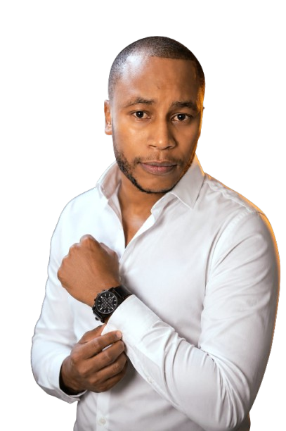

ENGINEER GEOFFREY MWANGI
WATER ENGINEER | NRW MANAGEMENT
I'm a Water and Environmental Engineer passionate about water resources management, environmental engineering, sustainable water solutions and improving access to clean and reliable water.

Reduce water losses
Better monitoring
Accurate billing
Find & fix leakages
Smarter decisions
Reduce water losses
Better monitoring
Accurate billing
Find & fix leakages
Smarter decisions
Sustainable solutions
I am a Water and Environmental Engineer with experience in water resources management, Non-Revenue Water management, environmental engineering and water utility operations.
My work focuses on improving water utility efficiency, reducing water losses, managing infrastructure and developing sustainable solutions for communities.
Othaya-Mukurweini Water and Sanitation Company (OMWASCO)
May 2024 - Present
Noromaru Water and Sanitation Company Limited (NOROWASCO)
July 2023 - April 2024
Othaya Water and Sanitation Company (OTHYASCO)
January 2016 - December 2017
Egerton University
August 2012 – December 2018
Second Class (Lower Division)
Othaya Boys High School
February 2008 – November 2011
Mean Grade: B+
Evam Academy
January 2005 – November 2007
Marks: 365/500
Planning, designing, budgeting, and preparing the Wakariru-Murera water supply project report.
Successfully supervised the implementation of a Non-Revenue Water (NRW) reduction plan.
Developed a comprehensive GIS database for company assets using ESRI-ArcGIS software.
Provided training and mentorship to technical department staff, improving their skills and knowledge.
Design of a water supply system for a rural community, including the development of hydraulic models and the selection of appropriate materials and equipment.
Conducted an environmental impact assessment for a proposed water treatment plant, including the identification of potential environmental risks and the development of mitigation measures.
Developed a GIS database for a water utility company, including the mapping of assets and the integration of data from various sources.
If you would like to get in touch with me, please feel free to reach out via email or phone.